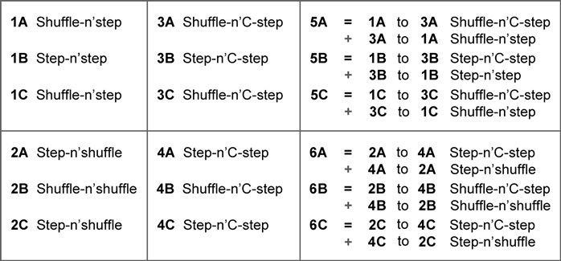

|
|||||||||||||||||||||||||||||||
|
Each of the six drills in the above Matrix are taught using the three Methods listed.
The resulting 18 drills are covered in detail in the our Fighting Footwork DVD series. The following table provides a quick list of each drill's primary foot movements. |

For even more helpful charts, check out our Fighting Footwork of Kuntao and Silat Workbook
which covers cues like Smash-n'shuffle and Smash-n'step, as well as Grind-n'shuffle and Grind-n'step.
|
Some have requested specifications for the two footwork patterns shown in the Fighting Footwork of Kuntao and Silat video series. The lengths shown in the two footwork patterns are provided in inches, and although the displayed angles are 45 degrees, over time and with sufficient practice, they should automatically tighten to between 15 and 30 degrees.
|
|
This Zig-Zag pattern is used by seven of the langkah drills: 1A, 1B, 1C, 2B, 3A, 3C, and 4B.
What we call the M-and-M pattern is used by five of the langkah drills: 2A, 2C, 3B, 4A, and 4C. Since Langkah's 5 and 6 are simply combinations of Langkah's 1-4, floor patterns specific to them are really unnecessary. Moreover, adding them only complicates what is already elegantly simple. |
|
One more point: We practice our langkah drills with minimal handwork because doing so forces us to focus on the legs. The drills are intended to make us comfortable with leg position and contact, and you simply cannot do that with most self-defense techniques. |
|
©Copyright Bob Orlando, 1999-2015 All rights reserved. |
http://www.OrlandoKuntao.com
E-mail: Ron@OrlandoKuntao.com |
Last update:
Aug. 6, 2016 by Bob Orlando |